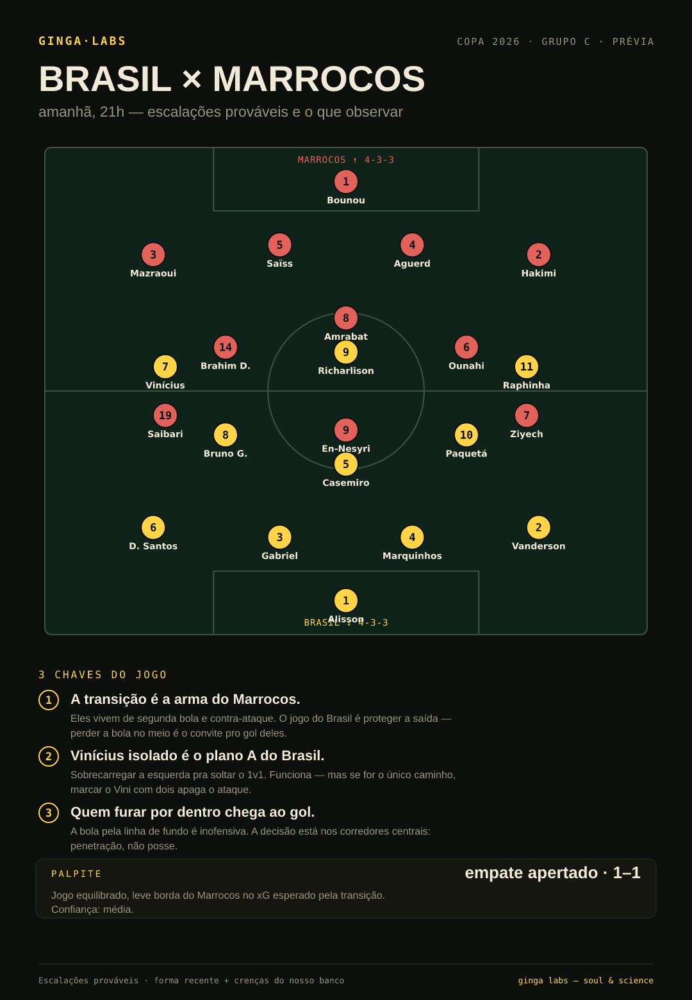
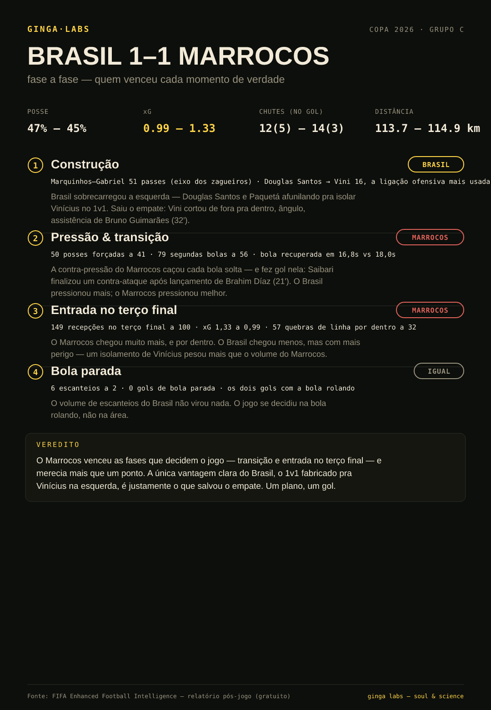
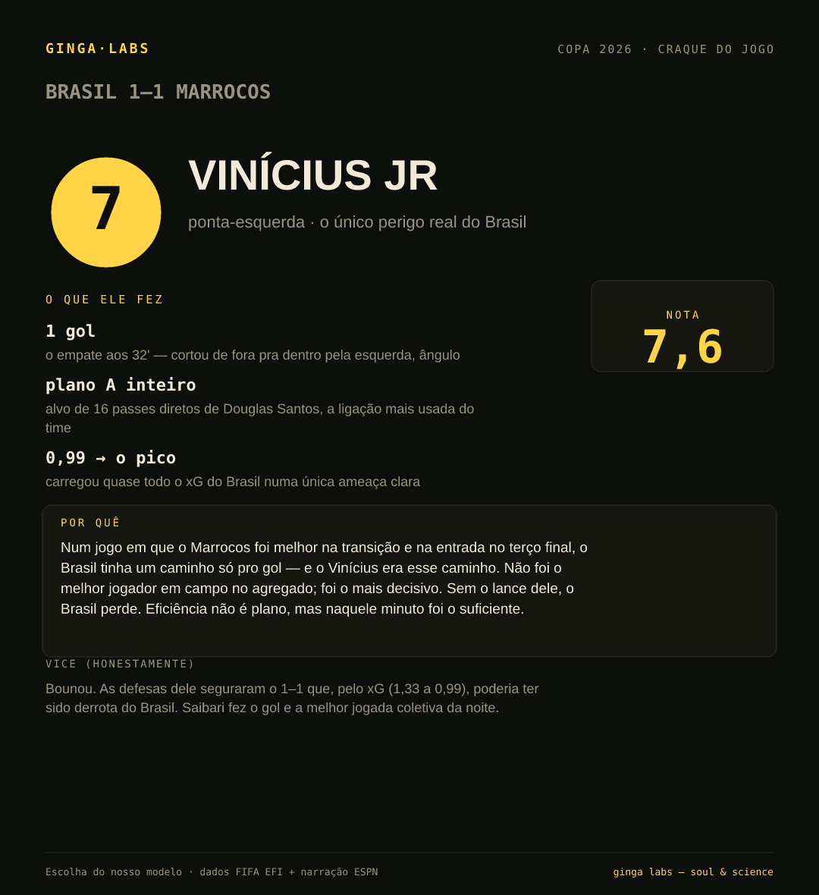
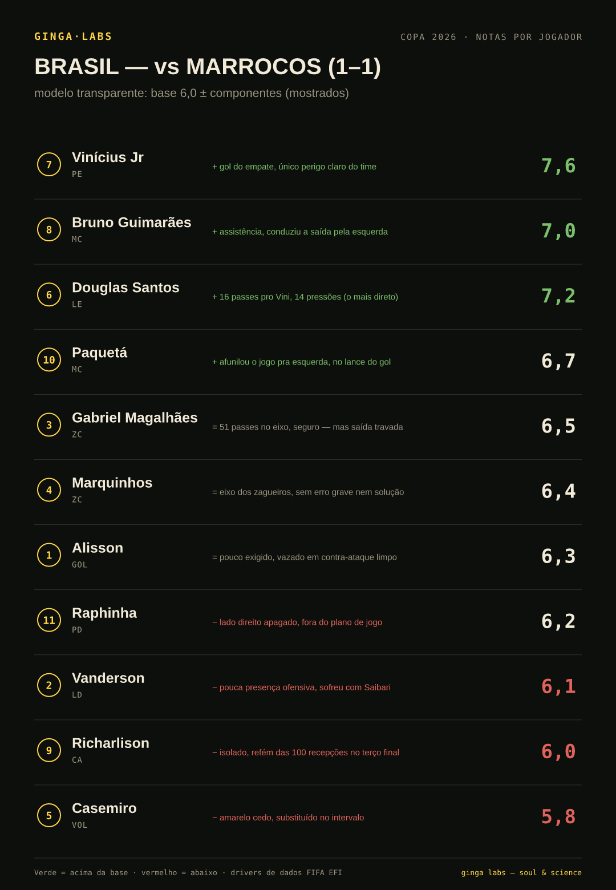

Brasil × Marrocos
A cobertura inteira, na ordem do relógio: a prévia, o pós-jogo, o craque e as notas. Cada peça começa pela resposta — e prova o porquê nos dados.
T–1 dia · pré-jogo
A prévia: as duas escalações e as 3 chaves
O Marrocos vive de transição; o Brasil, de um plano só — soltar o Vinícius na esquerda. O palpite é empate apertado, com leve borda do Marrocos no xG. As chaves dizem onde o jogo será ganho antes de a bola rolar.

Fim de jogo · pós-jogo
A análise: o empate mentiu pro Brasil
O placar pareceu justo; os dados dizem que não. O Brasil teve a bola; o Marrocos fez mal com ela. Fase a fase — transição, construção, entrada no terço final — quem venceu cada momento e o mecanismo por trás.

Ler a análise completa →Fim de jogo · craque do jogo
O craque: Vinícius Jr
Não foi o melhor em campo no agregado — foi o mais decisivo. Num jogo de um caminho só pro gol, ele era o caminho. A nota mostra o porquê, e o vice (Bounou) está lá, honestamente.

Fim de jogo · notas por jogador
As notas: modelo transparente
Base 6,0, ajustada por componentes — e cada componente aparece. Nada de número de caixa-preta: ao lado de cada nota, o driver de dados que a justifica. Verde acima da base, vermelho abaixo.

Método: escalações e palpite pré-jogo vêm da forma recente + crenças do nosso banco (previsão, não fato — marcada como tal). Análise, craque e notas vêm dos dados pós-jogo da FIFA Enhanced Football Intelligence e da narração da ESPN. Os números são nossos; os eventos vêm do registro.